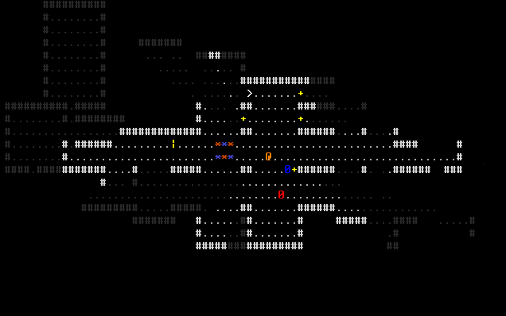
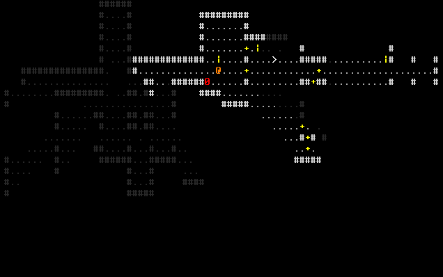

Deep Geo Devlog
Development blog for an ASCII monster-collecting roguelike with genetics.
Week 1: Prototyping Puzzles
A wanted to create a non-combat-focused roguelike with Deep Geo. This necessitates interersting, non-combat mechanics. I settled on three ideas; this week, I implemented two ideas.
Push/Pull Block Puzzles
Inspired by Lufia 2, 30% of floors generate a push/pull puzzle. Six barrels appear on the floor (three red and three blue), and six receptacles where you have to place a barrel of the matching colour.
You can push the blocks, and also pull them by holding space and moving:

Placing all six barrels on matching receptacles solves the puzzle and nets three keys. Which brings us to the next idea.
Locked Doors and keys
Few roguelikes use the concept of key-locked doors. While this is hard to generate meaningfully (how can I guarantee that you need to get keys to lock doors? How can I make sure this is solvable and keys are not behind locked doors?), one advantage of roguelikes is that you can always go back up a floor and come back down to generate a new floor.
Keys are pretty simple: any key can unlock any locked door.

Next week, I plan to implement the third feature (switch puzzles which simultaneously activate multiple doors). If that goes well, I can add monsters, and see if/how the puzzles work with actual monsters hounding you.